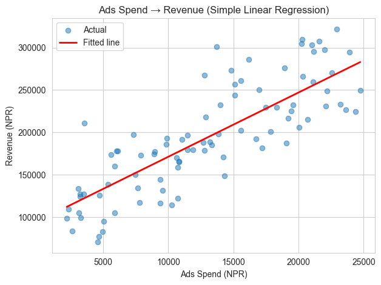
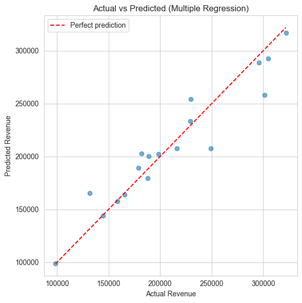

Notebook 6 — Regression for CA Professionals
Goal: Predict a number (revenue, expense, loan amount...) based on other columns.
You will learn:
- What regression is — in one minute
- Train / test split — why we never test on the same data we trained on
- Simple linear regression — one input, one output
- Multiple regression — several inputs
- Measuring how good the model is (MAE, RMSE, R²)
- Visualising predictions vs actual
- A short mini-project
All examples predict daily store revenue from ads spend, footfall, weekend/festival flags — using
data/daily_revenue.csv.
1. What is regression?
Regression answers: "Given some inputs, what number should I expect?"
Real CA-style examples: - Predict next month's revenue from ad spend, footfall, season. - Predict a property's value from area, location, age. - Predict electricity expense from production output.
The model learns the relationship from past data, then applies it to new rows.
import pandas as pd
import numpy as np
import matplotlib.pyplot as plt
import seaborn as sns
sns.set_style("whitegrid")
daily = pd.read_csv("data/daily_revenue.csv")
print("Shape:", daily.shape)
daily.head()
Shape: (90, 6)
| Date | Ads_Spend | Footfall | Is_Weekend | Is_Festival | Revenue | |
|---|---|---|---|---|---|---|
| 0 | 2024-07-16 | 17479.0 | 321 | 0 | 0 | 229308.0 |
| 1 | 2024-07-17 | 20050.0 | 229 | 0 | 0 | 206190.0 |
| 2 | 2024-07-18 | 20294.0 | 462 | 0 | 1 | 309754.0 |
| 3 | 2024-07-19 | 4684.0 | 190 | 0 | 0 | 77360.0 |
| 4 | 2024-07-20 | 9358.0 | 182 | 1 | 0 | 144554.0 |
2. Train / Test split — the golden rule
Never check a model against the same rows you taught it. Split your data into two parts:
| Subset | Use |
|---|---|
| Train | The model learns from this data |
| Test | We check the model on data it has never seen |
A typical split is 80% train, 20% test.
from sklearn.model_selection import train_test_split
X = daily[["Ads_Spend"]] # input column(s) — must be 2-D
y = daily["Revenue"] # what we want to predict
X_train, X_test, y_train, y_test = train_test_split(
X, y, test_size=0.2, random_state=42)
print("Train rows:", len(X_train))
print("Test rows:", len(X_test))
Train rows: 72
Test rows: 18
3. Simple linear regression — one input
The model learns the line: Revenue = m × Ads_Spend + c
from sklearn.linear_model import LinearRegression
model = LinearRegression()
model.fit(X_train, y_train)
print(f"Slope (m): {model.coef_[0]:.2f}")
print(f"Intercept (c): {model.intercept_:.0f}")
print(f"→ Equation: Revenue = {model.coef_[0]:.2f} * Ads_Spend + {model.intercept_:.0f}")
Slope (m): 7.58
Intercept (c): 95465
→ Equation: Revenue = 7.58 * Ads_Spend + 95465
# Predict on the held-out test set
y_pred = model.predict(X_test)
pd.DataFrame({"Actual": y_test.values[:10],
"Predicted": y_pred[:10].round(0)}).head(10)
| Actual | Predicted | |
|---|---|---|
| 0 | 301305.0 | 199253.0 |
| 1 | 165756.0 | 177601.0 |
| 2 | 304694.0 | 248972.0 |
| 3 | 198129.0 | 200542.0 |
| 4 | 229308.0 | 227979.0 |
| 5 | 158795.0 | 176699.0 |
| 6 | 179067.0 | 192347.0 |
| 7 | 216391.0 | 240920.0 |
| 8 | 131883.0 | 167783.0 |
| 9 | 249144.0 | 263748.0 |
Practice 1
Use the model to predict the revenue when Ads_Spend = 10,000.
Hint: call model.predict(pd.DataFrame({"Ads_Spend":[10000]})).
# Your turn:
Show solution
new_input = pd.DataFrame({"Ads_Spend":[10000]})
print("Predicted revenue:", model.predict(new_input)[0].round(0))
4. How good is the model? — MAE, RMSE, R²
| Metric | Meaning | Better when |
|---|---|---|
| MAE | Mean Absolute Error — avg NPR difference | smaller |
| RMSE | Root Mean Squared Error — penalises big mistakes | smaller |
| R² | % of variation in revenue the model explains | closer to 1 |
from sklearn.metrics import mean_absolute_error, mean_squared_error, r2_score
mae = mean_absolute_error(y_test, y_pred)
rmse = np.sqrt(mean_squared_error(y_test, y_pred))
r2 = r2_score(y_test, y_pred)
print(f"MAE : NPR {mae:,.0f}")
print(f"RMSE : NPR {rmse:,.0f}")
print(f"R² : {r2:.3f} ({r2*100:.1f}% of variation explained)")
MAE : NPR 25,929
RMSE : NPR 35,997
R² : 0.666 (66.6% of variation explained)
5. Visualising the fit
The scatter shows actual points; the red line is what the model learned.
plt.scatter(daily["Ads_Spend"], daily["Revenue"], alpha=0.5, label="Actual")
xs = np.linspace(daily["Ads_Spend"].min(), daily["Ads_Spend"].max(), 50)
ys = model.predict(pd.DataFrame({"Ads_Spend": xs}))
plt.plot(xs, ys, color="red", linewidth=2, label="Fitted line")
plt.xlabel("Ads Spend (NPR)")
plt.ylabel("Revenue (NPR)")
plt.title("Ads Spend → Revenue (Simple Linear Regression)")
plt.legend()
plt.tight_layout()
plt.show()

6. Multiple regression — using several inputs
Real revenue depends on more than just ads spend. Add footfall, weekend and festival flags and let the model use all of them at once.
X = daily[["Ads_Spend", "Footfall", "Is_Weekend", "Is_Festival"]]
y = daily["Revenue"]
X_tr, X_te, y_tr, y_te = train_test_split(X, y, test_size=0.2, random_state=42)
multi = LinearRegression().fit(X_tr, y_tr)
# Coefficients tell us the impact of each input
coefs = pd.Series(multi.coef_, index=X.columns).round(2)
print("Intercept :", multi.intercept_.round(2))
print(coefs.to_string())
Intercept : 7106.53
Ads_Spend 8.09
Footfall 264.64
Is_Weekend 12921.49
Is_Festival 35531.46
y_pred = multi.predict(X_te)
print(f"MAE : NPR {mean_absolute_error(y_te, y_pred):,.0f}")
print(f"RMSE : NPR {np.sqrt(mean_squared_error(y_te, y_pred)):,.0f}")
print(f"R² : {r2_score(y_te, y_pred):.3f}")
MAE : NPR 13,242
RMSE : NPR 18,856
R² : 0.908
Practice 2
Use the multiple model to predict revenue for a day with: - Ads_Spend = 12,000 - Footfall = 300 - Is_Weekend = 0 - Is_Festival = 1
# Your turn:
Show solution
new_day = pd.DataFrame({
"Ads_Spend":[12000],
"Footfall":[300],
"Is_Weekend":[0],
"Is_Festival":[1],
})
print("Predicted revenue:", multi.predict(new_day)[0].round(0))
7. Actual vs Predicted — diagnostic plot
A good model has its dots close to the 45-degree line.
plt.figure(figsize=(6,6))
plt.scatter(y_te, y_pred, alpha=0.6)
lims = [min(y_te.min(), y_pred.min()), max(y_te.max(), y_pred.max())]
plt.plot(lims, lims, "r--", label="Perfect prediction")
plt.xlabel("Actual Revenue")
plt.ylabel("Predicted Revenue")
plt.title("Actual vs Predicted (Multiple Regression)")
plt.legend()
plt.tight_layout()
plt.show()

8. Mini-Project — predict monthly company revenue
Imagine you are given the past 12 months data:
| Month | Marketing_Spend | Salesmen | Units_Sold | Revenue |
|---|---|---|---|---|
toy = pd.DataFrame({
"Marketing_Spend":[50000,55000,60000,45000,70000,80000,75000,85000,90000,100000,110000,120000],
"Salesmen": [5, 5, 6, 6, 7, 7, 7, 8, 8, 9, 9, 10],
"Units_Sold": [420, 465, 510, 380, 540, 605, 580, 660, 700, 760, 820, 880],
"Revenue": [1250000, 1380000, 1520000, 1120000, 1620000, 1780000, 1700000,
1950000, 2080000, 2250000, 2400000, 2580000],
})
toy
| Marketing_Spend | Salesmen | Units_Sold | Revenue | |
|---|---|---|---|---|
| 0 | 50000 | 5 | 420 | 1250000 |
| 1 | 55000 | 5 | 465 | 1380000 |
| 2 | 60000 | 6 | 510 | 1520000 |
| 3 | 45000 | 6 | 380 | 1120000 |
| 4 | 70000 | 7 | 540 | 1620000 |
| 5 | 80000 | 7 | 605 | 1780000 |
| 6 | 75000 | 7 | 580 | 1700000 |
| 7 | 85000 | 8 | 660 | 1950000 |
| 8 | 90000 | 8 | 700 | 2080000 |
| 9 | 100000 | 9 | 760 | 2250000 |
| 10 | 110000 | 9 | 820 | 2400000 |
| 11 | 120000 | 10 | 880 | 2580000 |
Your tasks:
- Split the data into train (80%) and test (20%) — use
random_state=0. - Fit a
LinearRegressionusing all three inputs. - Print the coefficients of each input.
- Report MAE, RMSE and R² on the test set.
- Predict the revenue for a month with: Marketing_Spend = 95,000, Salesmen = 9, Units_Sold = 750.
# Your code here
Show solution
from sklearn.model_selection import train_test_split
from sklearn.linear_model import LinearRegression
from sklearn.metrics import mean_absolute_error, mean_squared_error, r2_score
X = toy[["Marketing_Spend","Salesmen","Units_Sold"]]
y = toy["Revenue"]
X_tr, X_te, y_tr, y_te = train_test_split(X, y, test_size=0.2, random_state=0)
m = LinearRegression().fit(X_tr, y_tr)
print("Coefs :", dict(zip(X.columns, m.coef_.round(2))))
print("Intercept:", m.intercept_.round(2))
p = m.predict(X_te)
print()
print(f"MAE : {mean_absolute_error(y_te, p):,.0f}")
print(f"RMSE : {np.sqrt(mean_squared_error(y_te, p)):,.0f}")
print(f"R² : {r2_score(y_te, p):.3f}")
new_month = pd.DataFrame({"Marketing_Spend":[95000],"Salesmen":[9],"Units_Sold":[750]})
print("\nPredicted revenue:", m.predict(new_month)[0].round(0))
What's next?
Now we can predict numbers. The final notebook (07_Classification) tackles the other big question — predicting categories (yes/no, default/not, fraud/not). The workflow is the same; only the metric changes.